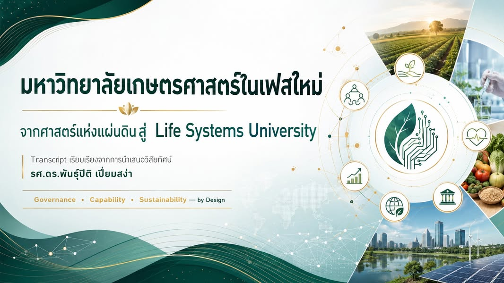

จากศาสตร์แห่งแผ่นดินสู่ Life Systems University
{kind=link}

มหาวิทยาลัยเกษตรศาสตร์มีศักยภาพเดิมอยู่แล้ว ทั้งศาสตร์ ผู้คน เครือข่าย เป้าหมาย และทรัพยากร โจทย์ใหญ่จึงไม่ใช่การรื้อแล้วเริ่มใหม่ทั้งหมด
โจทย์คือทำให้สิ่งที่กระจายอยู่เชื่อมกันเป็นระบบ มีทิศทางร่วม และสร้างผลลัพธ์ที่สังคมมองเห็น ตรวจสอบ และเชื่อถือได้
จากมหาวิทยาลัยด้านเกษตร สู่มหาวิทยาลัยของระบบชีวิต
Life Systems University ใช้ความเข้มแข็งเดิมของเกษตรศาสตร์ขยายไปสู่ระบบชีวิตของประเทศ ตั้งแต่เกษตร อาหาร สุขภาพ พลังงาน สิ่งแวดล้อม เทคโนโลยี สังคม และความยั่งยืน
นี่ไม่ใช่การทิ้งอัตลักษณ์ “ศาสตร์แห่งแผ่นดิน” แต่เป็นการยืนยันตัวตนเดิมในกรอบที่กว้าง ชัด และเชื่อมโยงกับโจทย์ของโลกมากขึ้น
ทำสิ่งที่ประเทศขาด ตลาดยังไม่พร้อม และผู้คนยังทำเองไม่ได้
บทบาทของมหาวิทยาลัยไม่ใช่ทำทุกอย่างแข่งกับหน่วยงานอื่น แต่รับผิดชอบงานที่สังคมยังขาด ตลาดไม่พร้อมลงทุน ผู้คนยังไม่มีขีดความสามารถทำเอง หรือเป็นความเสี่ยงระยะยาวที่ไม่มีใครอยากถือไว้
มหาวิทยาลัยต้องสะสมความรู้ระยะยาว เชื่อมรัฐ เอกชน ชุมชน และประชาคมโลก และทำหน้าที่เป็น Trusted System Partner ที่ทุกฝ่ายทำงานด้วยแล้วเชื่อใจได้
1. ธรรมาภิบาลบนข้อมูลเดียวกัน
การตัดสินใจต้องตั้งอยู่บนข้อมูลที่ถูกต้อง โปร่งใส ตรวจสอบย้อนกลับได้ และใช้ร่วมกันตั้งแต่ระดับภาควิชาจนถึงสภามหาวิทยาลัย หากแต่ละส่วนเห็นคนละชุดข้อมูล การเชื่อมมหาวิทยาลัยเป็นระบบย่อมเกิดไม่ได้
2. ศักยภาพของคนและหลักสูตรที่ตอบโจทย์จริง
บัณฑิตต้องนำความรู้ไปทำงานได้ หลักสูตรต้องเชื่อมกับสิ่งที่ประเทศต้องการ และคนในมหาวิทยาลัยต้องทำงานอย่างมีพลัง ไม่ใช่อยู่รอดได้ด้วยการเสียสละส่วนตัวไปเรื่อย ๆ
ศักยภาพจึงไม่ใช่เพียงจำนวนหลักสูตรหรือคุณวุฒิ แต่คือความสามารถของระบบที่จะทำให้คนเก่งสร้างคุณค่าร่วมกันได้จริง
3. ความยั่งยืนทางการเงินและความรู้
มหาวิทยาลัยไม่ควรหาเงินแบบครั้งเดียวจบ แต่ต้องสร้างวงจรการเรียนรู้ที่ทำให้เกิดโจทย์ใหม่ ความรู้ใหม่ และความสามารถใหม่ พร้อมระบบรายได้และต้นทุนที่เข้าใจได้ ตรวจสอบได้ และดำเนินต่อเนื่องในระยะยาว
เร่งอย่างมีระบบ
มหาวิทยาลัยเกษตรศาสตร์มีของครบแล้ว สิ่งที่ต้องทำคือทำให้ของที่มีเข้ารูปเข้ารอย เป็นระบบ และสร้างความเชื่อถือได้จริง
นี่คือความหมายของการเร่งอย่างมีระบบ และเป็นเหตุผลว่าสังคมไทยยังต้องมีมหาวิทยาลัยเกษตรศาสตร์ที่เข้มแข็ง
อ่านฉบับเต็ม Transcript การนำเสนอวิสัยทัศน์: Life Systems University รายละเอียดฉบับเต็มของบทบาท ระบบข้อมูล คน โครงสร้าง และความยั่งยืนในเฟสใหม่ของมหาวิทยาลัยเกษตรศาสตร์